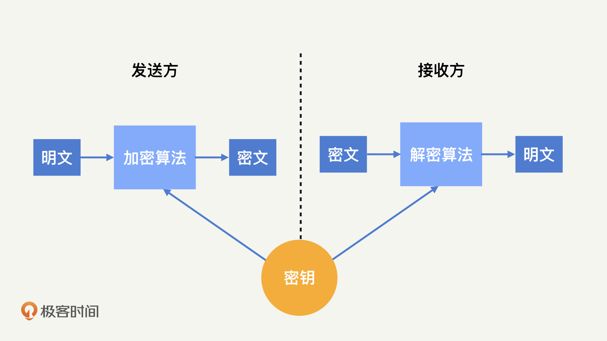

- 00 开篇词 别说你没被安全困扰过.md.html
- 01 安全的本质：数据被窃取后，你能意识到问题来源吗？.md.html
- 02 安全原则：我们应该如何上手解决安全问题？.md.html
- 03 密码学基础：如何让你的密码变得“不可见”？.md.html
- 04 身份认证：除了账号密码，我们还能怎么做身份认证？.md.html
- 05 访问控制：如何选取一个合适的数据保护方案？.md.html
- 06 XSS：当你“被发送”了一条微博时，到底发生了什么？.md.html
- 07 SQL注入：明明设置了强密码，为什么还会被别人登录？.md.html
- 08 CSRF_SSRF：为什么避免了XSS，还是“被发送”了一条微博？.md.html
- 09 反序列化漏洞：使用了编译型语言，为什么还是会被注入？.md.html
- 10 信息泄露：为什么黑客会知道你的代码逻辑？.md.html
- 11 插件漏洞：我的代码看起来很安全，为什么还会出现漏洞？.md.html
- 13 Linux系统安全：多人共用服务器，如何防止别人干“坏事”？.md.html
- 14 网络安全：和别人共用Wi-Fi时，你的信息会被窃取吗？.md.html
- 15 Docker安全：在虚拟的环境中，就不用考虑安全了吗？.md.html
- 16 数据库安全：数据库中的数据是如何被黑客拖取的？.md.html
- 17 分布式安全：上百个分布式节点，不会出现“内奸”吗？.md.html
- 18 安全标准和框架：怎样依“葫芦”画出好“瓢”？.md.html
- 19 防火墙：如何和黑客“划清界限”？.md.html
- 20 WAF：如何为漏洞百出的Web应用保驾护航？.md.html
- 21 IDS：当黑客绕过了防火墙，你该如何发现？.md.html
- 22 RASP：写规则写得烦了？尝试一下更底层的IDS.md.html
- 23 SIEM：一个人管理好几个安全工具，如何高效运营？.md.html
- 24 SDL：怎样才能写出更“安全”的代码？.md.html
- 25 业务安全体系：对比基础安全，业务安全有哪些不同？.md.html
- 26 产品安全方案：如何降低业务对黑灰产的诱惑？.md.html
- 27 风控系统：如何从海量业务数据中，挖掘黑灰产？.md.html
- 28 机器学习：如何教会机器识别黑灰产？.md.html
- 29 设备指纹：面对各种虚拟设备，如何进行对抗？.md.html
- 30 安全运营：“黑灰产”打了又来，如何正确处置？.md.html
- 加餐1 数据安全：如何防止内部员工泄露商业机密？.md.html
- 加餐2 前端安全：如何打造一个可信的前端环境？.md.html
- 加餐3 职业发展：应聘安全工程师，我需要注意什么？.md.html
- 加餐4 个人成长：学习安全，哪些资源我必须要知道？.md.html
- 加餐5 安全新技术：IoT、IPv6、区块链中的安全新问题.md.html
- 模块串讲（一）Web安全：如何评估用户数据和资产数据面临的威胁？.md.html
- 模块串讲（三）安全防御工具：如何选择和规划公司的安全防御体系？.md.html
- 模块串讲（二）Linux系统和应用安全：如何大范围提高平台安全性？.md.html
- 结束语 在与黑客的战役中，我们都是盟友！.md.html
- 捐赠
03 密码学基础：如何让你的密码变得“不可见”？
你好，我是何为舟。
上一讲，我们学习了黄金法则的三部分核心内容：认证、授权、审计。它们描述了用户在使用应用的各个环节，我们需要采取的安全策略。
在掌握了黄金法则之后，你就能以在安全发展规划上的宏观能力，赢得面试官的认可。接下来，他想考验一下你对安全具体知识的理解，以此来判断你能否将安全发展落地。于是，他问了一个非常基础的问题：你懂加解密吗？
可以说，密码学是“黄金法则”的基础技术支撑。失去了密码学的保护，任何认证、授权、审计机制都是“可笑”的鸡肋。
在实际的生活工作中经常会有这样的场景发生：多个用户共用一个Wi-Fi来上网、共用一个服务器来跑任务；多个进程共用一个数据库来完成数据存储。在这些场景中，多方交互都通过一个共同的通道来进行，那我们该如何保障其中内容的CIA呢？这就需要用到各种加密技术了。今天，我们就一起来学习密码学相关的知识。
首先，我先来普及一个语文知识。密钥中的钥，发音为yuè，不是yào。虽然通常情况下，你按正常发音读的话，别人都会听成“蜜月”。但是，我们还是要用正确、专业的发音。
接下来，我来介绍一些经典的密码学算法：对称加密算法、非对称加密算法和散列算法。这些算法的具体实现不是咱们课程的重点，而且本身的过程也非常复杂。在安全这块内容里，你只需要明确了解这些算法的概念及其优缺点，就足够你去选取合适的加密算法了。
对称加密算法
首先，我们来看对称加密算法。所谓对称加密，代表加密和解密使用的是同一个密钥。概念很简单，但是也很不具体、直观。为了帮助你理解，我把具体的加解密过程，画了一张图，你可以看一下。

下面我来具体讲讲这个过程，如果我想给你发一段消息，又不想被其他人知道。那么我作为发送方，会使用加密算法和密钥，生成消息对应的密文；而你作为接收方，想要阅读消息，就需要使用解密算法和一个同样的密钥，来获得明文。
我们常见的经典对称加密算法有DES、IDEA、AES、国密SM1和SM4。下面我们一起来具体看看。
第一种对称加密算法是DES（数据加密标准，Data Encryption Standard）。
DES应该是最早的现代密码学算法之一。它由美国政府提出，密钥长度为56位。目前，它暴力破解56位密码的时间，已经能控制在24小时内了。
DES实际上是一个过时的密码学算法，目前已经不推荐使用了。关于DES，还有一点特别有意思。DES包含一个关键模块：S盒，其设计的原理一直没有公开。因此，很多人都相信，这个S盒中存在后门，只要美国政府需要，就能够解密任何DES密文。
第二种对称加密算法是IDEA（国际数据加密算法，International Data Encryption Algorithm）。
IDEA由瑞士研究人员设计，密钥长度为128位。对比于其他的密码学算法，IDEA的优势在于没有专利的限制。相比于DES和AES的使用受到美国政府的控制，IDEA的设计人员并没有对其设置太多的限制，这让IDEA在全世界范围内得到了广泛地使用和研究。
第三种需要了解的对称加密算法是AES（高级加密标准，Advanced Encryption Standard）。
在DES被破解后，美国政府推出了AES算法，提供了128位、192位和256位三种密钥长度。通常情况下，我们会使用128位的密钥，来获得足够的加密强度，同时保证性能不受影响。目前，AES是国际上最认可的密码学算法。在算力没有突破性进展的前提下，AES在可预期的未来都是安全的。
最后一种是国密SM1（SM1 Cryptographic Algorithm）和SM4（SM4 Cryptographic Algorithm）。
我们知道，密码学作为安全的基础学科，如果全部依靠国外的技术，对于国家安全可能产生不利影响。因此，中国政府提出了一系列加密算法。其中，国密算法SM1和SM4都属于对称加密的范畴。SM1算法不公开，属于国家机密，只能通过相关安全产品进行使用。而SM4属于国家标准，算法公开，可自行实现使用。国密算法的优点显而易见：受到国家的支持和认可。
借助下面的对比情况表，相信你会对这几种对称加密算法有更清晰的认识。-
现在你应该对几种经典的对称加密算法有了初步地了解。接下来，我们来看一看它们是如何应用的。
在加密通信中（如HTTPS、VPN、SSH等），通信双方会协商出一个加密算法和密钥，对传输的数据进行加密，从而防止第三方窃取。在类似数据库加密这种存储加密技术中，通信双方也是将存储空间中的数据进行加密，这样即使硬盘被物理窃取，也不会导致信息丢失。在公司内部，为了避免用户的Cookie和隐私信息发生泄漏，也需要对它们进行加密存储。
对于大部分公司来说，选取AES128进行加解密运算，就能获得较高的安全性和性能。如果是金融或政府行业，在涉及国家层面的对抗上，有一定的合规需求，则需要应用国密算法。
另外，在选取加密算法的时候，存在不同的分组计算模式：ECB/CBC/CFB/OFB/CTR。这些模式的具体细节不是我们学习的重点，在这里就不展开了。你需要知道的是：选取CBC和CTR这两种推荐使用的模式就可以满足大部分需求了，它们在性能和安全性上都有较好的保证。
非对称加密算法
有对称就一定会有非对称。非对称加密代表加密和解密使用不同的密钥。具体的加解密过程就是，发送方使用公钥对信息进行加密，接收方收到密文后，使用私钥进行解密。具体我也画了一张图，你可以和上面的对称加密算法的图一起对照着看一下。可以看到，非对称加密和对称加密算法的最大区别就是，加密和解密使用的密钥是不同的。
当使用对称加密算法的时候，你不仅要跟每一个通信方协定一个密钥，还要担心协商过程中密钥泄露的可能性。比如，我当面告诉了你一个密码，怎么保证不被偷听呢？而在非对称加密算法中，公钥是公开信息，不需要保密，我们可以简单地将一个公钥分发给全部的通信方。也就是说，我现在就可以告诉你一个公钥密码，即使这意味着所有阅读这篇文章的人都知道了这个密码，那也没关系。因此，非对称密钥其实主要解决了密钥分发的难题。
除了加密功能外，大部分的非对称算法还提供签名的功能。这也就是说，我们可以使用私钥加密，公钥解密。一旦接收方通过公钥成功解密，我们就能够证明发送方拥有对应的私钥，也就能证实发送方的身份，也就是说，私钥加密就是我们说的签名。
你还可以这样理解，比如我现在和你说话，内容经过了我的私钥加密，你用公钥解得了明文。因为私钥只有我拥有，所以只有我能够发出这段话来，别人都不可能。这也就是说，我不可能狡辩称这段话不是我说的。

所有的非对称加密算法，都是基于各种数学难题来设计的，这些数学难题的特点是：正向计算很容易，反向推倒则无解。经典的非对称加密算法包括：RSA、ECC和国密SM2。接下来，我们一个个来看。
我们先看第一种非对称加密算法RSA（RSA加密算法，RSA Algorithm）。
RSA的数学难题是：两个大质数p、q相乘的结果n很容易计算，但是根据n去做质因数分解得到p、q，则需要很大的计算量。RSA是比较经典的非对称加密算法，它的主要优势就是性能比较快，但想获得较高的加密强度，需要使用很长的密钥。
我们再来看第二种ECC（椭圆加密算法，Elliptic Curve Cryptography）。
ECC是基于椭圆曲线的一个数学难题设计的。目前学术界普遍认为，椭圆曲线的难度高于大质数难题，160位密钥的ECC加密强度，相当于1088位密钥的RSA。因此，ECC是目前国际上加密强度最高的非对称加密算法。
最后一种是国密SM2（SM2 Cryptographic Algorithm）。
国密算法SM2也是基于椭圆曲线问题设计的，属于国家标准，算法公开，加密强度和国际标准的ECC相当。而国密的优势在于国家的支持和认可。
好了，这3种非对称加密算法的优缺点我也总结成了一张表格，你可以看一看。
我们前面说了，对比于对称加密算法，非对称加密算法最大的优势就是解决密钥分发的问题。因此，现在大部分的认证和签名场景，其实使用的都是非对称加密算法。比如，在SSH登录、Git上传等场景中，我们都可以将自己的公钥上传到服务端，然后由客户端保存私钥。
那么，如果你遇到需要使用非对称加密的场景（比如多对一认证），我推荐你使用ECC算法。
散列算法
散列算法应该是最常见到的密码学算法了。大量的应用都在使用MD5或者SHA算法计算一个唯一的id。比如Git中的提交记录、文件的完整性校验、各种语言中字典或者Map的实现等等。很多场景下，我们使用散列算法并不是为了满足什么加密需求，而是利用它可以对任意长度的输入，计算出一个定长的id。
作为密码学的算法，散列算法除了提供唯一的id，其更大的利用价值还在于它的不可逆性。当用户注册，提交账号密码时，作为一个安全的应用，是绝对不能够存储明文密码的。因此，我们对用户的密码通过散列算法进行计算，存储最终的散列值。
在后续登录的过程中，我们如果计算出的用户提交的密码的散列值和你存储的散列值一致，就可以通过验证了。这样一来，任何人（即使是内部员工）都不知道用户真实的密码是什么，而用户也能够完成密码的校验。
除了刚才说的不可逆性，在密码学上，我们对散列算法的要求还有：鲁棒性（同样的消息生成同样的摘要）、唯一性（不存在两个不同的消息，能生成同样的摘要）。
经典的散列算法包括MD5、SHA、国密SM3。下面我们逐一来看。
我们先来看第1种，MD5（消息摘要算法，Message-Digest Algorithm 5）。
MD5可以用来生成一个128位的消息摘要，它是目前应用比较普遍的散列算法，具体的应用场景你可以自行参阅。虽然，因为算法的缺陷，它的唯一性已经被破解了，但是大部分场景下，这并不会构成安全问题。但是，如果不是长度受限（32个字符），我还是不推荐你继续使用MD5的。
第2种是SHA（安全散列算法，Secure Hash Algorithm）。
SHA是美国开发的政府标准散列算法，分为SHA-1和SHA-2两个版本，SHA-2细分的版本我们就不介绍了。和MD5相同，虽然SHA的唯一性也被破解了，但是这也不会构成大的安全问题。目前，SHA-256普遍被认为是相对安全的散列算法，也是我最推荐你使用的散列算法。
第3种是国密SM3（SM3 Cryptographic Algorithm）。
国密算法SM3是一种散列算法。其属于国家标准，算法公开，加密强度和国际标准的SHA-256相当。和国密SM2一样，它的优势也在于国家的支持和认可。
上述算法的相关对比情况，我也总结了一下，如下表所示：

另外，我们在使用散列算法的时候，有一点需要注意一下，一定要注意加“盐”。所谓“盐”，就是一串随机的字符，是可以公开的。将用户的密码“盐”进行拼接后，再进行散列计算，这样，即使两个用户设置了相同的密码，也会拥有不同的散列值。同时，黑客往往会提前计算一个彩虹表来提升暴力破解散列值的效率，而我们能够通过加“盐”进行对抗。“盐”值越长，安全性就越高。
总结
好了，我们来总结一下这一节，你需要掌握的重点内容。
在这节课中，我对各种加密算法和应用场景进行了全面的介绍。密码学是一门深奥的学科，而作为密码学的使用者，你只需要正确地理解各类算法的特性和功能，就可以满足日常的应用需求了。
总的来说，在使用的时候，你要记住下面这些内容：对称加密具备较高的安全性和性能，要优先考虑。在一对多的场景中（如多人登录服务器），存在密钥分发难题的时候，我们要使用非对称加密；不需要可逆计算的时候（如存储密码），我们就使用散列算法。
在具体算法的选取上，你只需要记住：对称加密用AES-CTR、非对称加密用ECC、散列算法用SHA256加盐。这些算法就能够满足大部分的使用场景了，并且在未来很长一段时间内，都可以保持一个较高的安全强度。
思考题
通过今天的学习，相信你已经了解了密码学的各种概念和知识。对于这些加密算法，哪些你比较了解或者使用过呢？可以谈谈你的想法。
欢迎留言和我分享你的思考和疑惑，也欢迎你把文章分享给你的朋友。我们下一讲再见！
© 2019 - 2023 Liangliang Lee. Powered by gin and hexo-theme-book.